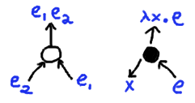

Instructions: If you draw a graph
with
nodes
and
edges such that every node has
exactly three edges, it determines a lambda-calculus term
obeying certain ordering
constraints.
See
here for some more links to literature. When the lambda
graph is successfully computed, the bluish dot is the lambda
at the root of the term, black dots are other lambdas, and
white dots are applications. Arrowheads generally point up the AST of the lambda-term, toward the root.
The variable bound by a lambda is an arrow emerging from the bottom left side of the lambda node.